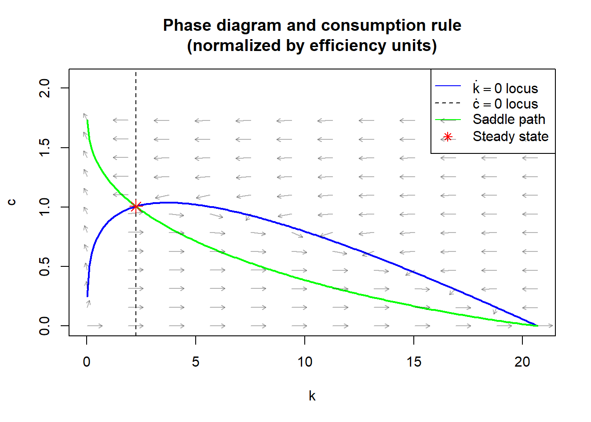
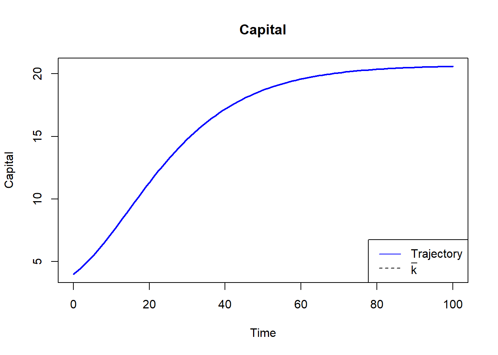
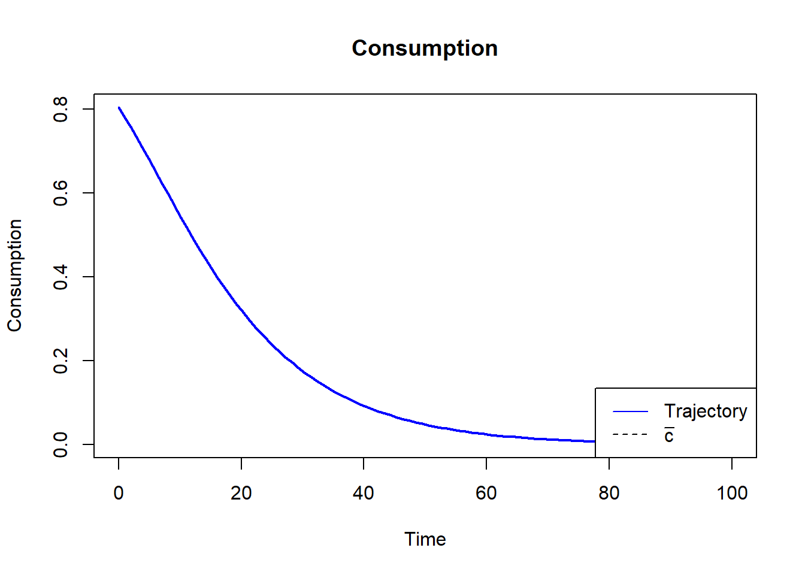

# Notwendige Pakete installieren, falls nicht vorhanden:
# install.packages("R6")
# install.packages("deSolve")
library(R6)Warning: Paket 'R6' wurde unter R Version 4.3.3 erstelltlibrary(deSolve)Warning: Paket 'deSolve' wurde unter R Version 4.3.3 erstellt# Class implementation
RCKmod <- R6Class("RCKmod",
public = list(
# Parameter definieren
rho = NULL,
alpha = NULL,
theta = NULL,
xi = NULL,
delta = NULL,
phi = NULL,
# Abgeleitete Werte und Funktionen
cFunc = NULL,
kmax = NULL,
kss = NULL,
css = NULL,
initialize = function(rho, alpha, theta, xi, delta, phi) {
# """
# Inputs:
# - rho: relative risk aversion coefficient for CRRA utility.
# - alpha: capital's share of production in Cobb-Douglas output function.
# - theta: time preference/discount rate.
# - xi: population growth rate.
# - delta: capital depreciation rate.
# - phi: labor productivity growth rate.
# """
# Assign parameter values
self$rho <- rho
self$alpha <- alpha
self$theta <- theta
self$xi <- xi
self$delta <- delta
self$phi <- phi
# Maximum capital
self$kmax <- (1/(self$phi + self$xi + self$delta))^(1/(1-self$alpha))
# Steady state capital
self$kss <- (alpha/(theta + xi + delta + rho*phi))^(1/(1-alpha))
# Steady state consumption
self$css <- self$kss^alpha - (xi + delta + phi)*self$kss
# Solve the model to create its consumption function
self$solve()
},
output = function(k) {
# """
# Cobb-Douglas normalized production function
# """
return(k^self$alpha)
},
dcdt = function(c, k) {
# """
# Consumption differential equation
# """
dc <- c/self$rho * (self$alpha * k^(self$alpha - 1) - self$theta - (self$xi + self$delta) - self$rho*self$phi)
return(dc)
},
dkdt = function(c, k) {
# """
# Capital differential equation
# """
dk <- self$output(k) - c - (self$phi + self$xi + self$delta)*k
return(dk)
},
dcdk = function(k, state, parms) {
# """
# Differential equation for the time elimination method.
# This corresponds to dc/dk = (dc/dt)/(dk/dt)
# WICHTIG: deSolve erwartet die Signatur func(time, state, parms).
# Hier ist 'k' die Zeit (unabhängige Variable) und 'c' der Zustand.
# """
c_val <- state[1]
# Verhindern von negativen Werten während der numerischen Lösung
if(c_val < 0) c_val <- 1e-10
dc_val <- self$dcdt(c_val, k)
dk_val <- self$dkdt(c_val, k)
return(list(c(dc_val / dk_val)))
},
solve = function(eps = 10^(-8), npoints = 400) {
# """
# Solves for the model's consumption rule through the time elimination method.
# """
# K ranges
# In R erzeugen wir Sequenzen.
k_below <- seq(self$kss, 0.0001, length.out = npoints)
k_above <- seq(self$kss, self$kmax, length.out = npoints)
# Solve for c on each side of the steady state capital
# deSolve::ode wird genutzt. Beachte: 'times' ist hier 'k'.
# Nach unten (Rückwärtsintegration sozusagen, da k abnimmt)
c_below_out <- ode(y = c(c = self$css - eps), times = k_below, func = self$dcdk, parms = NULL)
# Nach oben
c_above_out <- ode(y = c(c = self$css + eps), times = k_above, func = self$dcdk, parms = NULL)
# Daten zusammenfügen für Interpolation
# Wir müssen die 'below' Werte umkehren, damit k strikt aufsteigend ist für approxfun
k_vals <- c(rev(k_below), k_above[-1]) # -1 um Duplikat beim SS zu vermeiden
c_vals <- c(rev(c_below_out[,"c"]), c_above_out[-1,"c"])
# Create consumption function as an interpolation
# approxfun entspricht scipy.interpolate.interp1d
self$cFunc <- approxfun(k_vals, c_vals, rule = 2) # rule=2 erlaubt Extrapolation (constant) am Rand
},
dkdt_opt = function(t, state, parms) {
# """
# Differential equation for k assuming optimal c decisions.
# deSolve Signatur: (t, state, parms)
# """
k_val <- state[1]
c_val <- self$cFunc(k_val)
return(list(c(self$dkdt(c_val, k_val))))
},
k_dynamics = function(k0, t) {
# """
# Simulates optimal capital dynamics from a given starting point.
# """
out <- ode(y = c(k = k0), times = t, func = self$dkdt_opt, parms = NULL)
return(out) # Gibt Matrix mit Spalten 'time' und 'k' zurück
},
k0locus = function(k) {
# """
# Returns the consumption value that leaves a given amount of
# effective capital unchanged.
# """
return(self$output(k) - (self$phi + self$xi + self$delta)*k)
},
phase_diagram = function(npoints = 200, arrows = FALSE, n_arrows = 5) {
# """
# Plots the model's phase diagram.
# """
k <- seq(0.01, self$kmax, length.out = npoints)
# Setup Plot
# k_dot = 0 Locus
plot(k, self$k0locus(k), type = "l", col = "blue", lwd = 2,
ylim = c(0, max(self$cFunc(k))*1.2),
xlab = "k", ylab = "c",
main = "Phase diagram and consumption rule\n(normalized by efficiency units)")
# c_dot = 0 Locus (Vertical line)
abline(v = self$kss, lty = 2, col = "black")
# Saddle path
lines(k, self$cFunc(k), col = "green", lwd = 2)
# Steady state
points(self$kss, self$css, pch = 8, col = "red", cex = 1.5)
legend("topright", legend = c(expression(dot(k)==0 ~ locus),
expression(dot(c)==0 ~ locus),
"Saddle path", "Steady state"),
col = c("blue", "black", "green", "red"),
lty = c(1, 2, 1, NA), pch = c(NA, NA, NA, 8))
# Add arrows
if (arrows) {
x <- seq(min(k), max(k), length.out = n_arrows)
y <- seq(min(self$cFunc(k)), max(self$cFunc(k)), length.out = n_arrows)
grid <- expand.grid(k = x, c = y)
dc_vals <- self$dcdt(grid$c, grid$k)
dk_vals <- self$dkdt(grid$c, grid$k)
# Normalize length for visualization (quiver logic)
M <- sqrt(dk_vals^2 + dc_vals^2)
M[M == 0] <- 1
dk_vals <- dk_vals / M
dc_vals <- dc_vals / M
# Skalierungsfaktor für Pfeile (in R muss man Länge explizit angeben)
scale_x <- (max(k) - min(k)) / n_arrows * 0.4
scale_y <- (max(y) - min(y)) / n_arrows * 0.4
arrows(grid$k, grid$c,
grid$k + dk_vals * scale_x,
grid$c + dc_vals * scale_y,
length = 0.05, col = rgb(0,0,0,0.3))
}
}
)
)
# --- Ausführung (Main Block) ---
# Create and solve model
RCKmodExample <- RCKmod$new(rho = 2, alpha = 0.3, theta = 0.02, xi = 0.01, delta = 0.08, phi = 0.03)
# Note: $new() ruft automatisch initialize() und darin solve() auf.
# Test the consumption rule
cat(sprintf('Consumption at k = %1.2f is c = %1.2f\n',
RCKmodExample$kss/2, RCKmodExample$cFunc(RCKmodExample$kss/2)))Consumption at k = 1.13 is c = 1.20# Phase Diagram
RCKmodExample$phase_diagram(arrows = TRUE, n_arrows = 12)
# Create grid of time points
t <- seq(0, 100, length.out = 100)
# Find capital dynamics
k0 <- 4
out_sim <- RCKmodExample$k_dynamics(k0, t)
k_sim <- out_sim[,"k"] # Extrahiere k Spalte
# Plot Capital
plot(t, k_sim, type = "l", col = "blue", lwd = 2,
xlab = "Time", ylab = "Capital", main = "Capital")
abline(h = RCKmodExample$kss, lty = 2, col = "black")
legend("bottomright", legend = c("Trajectory", expression(bar(k))),
col = c("blue", "black"), lty = c(1, 2))
# Find consumption
c_sim <- RCKmodExample$cFunc(k_sim)
# Plot Consumption
plot(t, c_sim, type = "l", col = "blue", lwd = 2,
xlab = "Time", ylab = "Consumption", main = "Consumption")
abline(h = RCKmodExample$css, lty = 2, col = "black")
legend("bottomright", legend = c("Trajectory", expression(bar(c))),
col = c("blue", "black"), lty = c(1, 2))